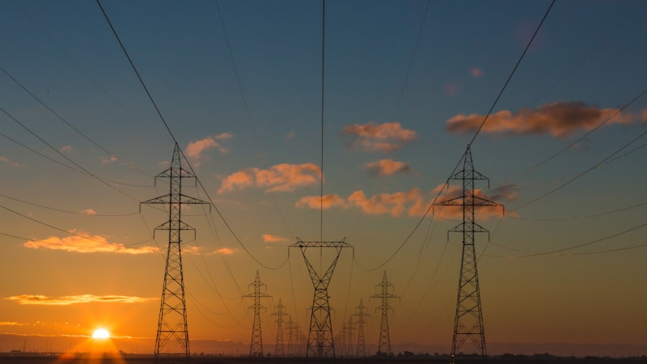

국제유가 전쟁 前 수준 회귀…석유 최고가격 인하

정부가 국제유가의 뚜렷한 하락세를 반영해 국내 석유류 최고가격을 하향 조정하기로 했다. 중동 전쟁 발발 이후 한때 배럴당 90달러를 웃돌던 국제유가가 전쟁 이전 수준으로 되돌아오면서, 서민 경제에 미치는 에너지 부담을 줄이기 위한 조치가 필요하다는 판단에서다.
국제 유가는 2023년 말~2024년 초 중동 지역의 지정학적 긴장 고조로 급격히 상승했으나, 이후 글로벌 경기 둔화 우려, OPEC+ 증산 논의 재개, 미국의 셰일오일 생산 확대 등의 영향으로 점진적인 하락 흐름을 이어왔다. 현재 서부 텍사스산 원유(WTI) 가격은 배럴당 65~70달러 내외로, 중동 분쟁 직전 수준에 근접한 상태다.
정부가 설정하는 석유 최고가격은 경유 및 등유 등 특정 석유류 제품에 대해 법적으로 허용되는 최대 판매가격을 의미한다. 이는 국제유가 상승기에 정유사나 주유소가 과도하게 가격을 올려 소비자에게 전가하는 것을 막기 위한 제도로, 에너지 취약계층과 물류·운수업계에 직접적인 영향을 미친다.
산업통상자원부 관계자는
국제유가가 안정적으로 하락세를 유지하고 있는 만큼
이를 국내 소비자 가격에 신속하게 반영하는 것이 중요하다
며 "최고가격 조정을 통해 가계의 연료비 부담 경감과 물가 안정에 기여할 수 있을 것"이라고 설명했다. 특히 경유 가격 인하는 화물운수업·농업·어업 종사자들에게 실질적인 도움이 될 것으로 기대된다.
국제 원유 시장에서는 공급 과잉 우려가 점점 커지고 있다. OPEC+ 회원국들의 감산 합의 이행률이 낮아지고 있는 데다, 미국의 셰일오일 생산량이 사상 최고 수준을 경신하고 있다. 또한 글로벌 경기 둔화로 인한 원유 소비 증가세 약화도 공급 과잉 우려를 가중시키는 요인이다.
에너지 경제연구원은 최근 보고서에서 2026년 하반기 평균 국제유가를 WTI 기준 배럴당 62~72달러로 전망했다. 이는 당초 예상치보다 낮아진 수치로, 글로벌 수요 부진과 산유국 간 증산 경쟁이 구조적인 유가 하방 압력으로 작용하고 있다는 분석이다. 다만 중동 지역의 갑작스러운 지정학적 불안 재발 시 유가가 다시 급등할 수 있다는 경고도 함께 제시됐다.
국내 정유업계는 유가 하락을 복잡한 시선으로 바라보고 있다. 정유사 입장에서는 원유 구매 비용이 낮아지는 긍정적 효과가 있는 반면, 재고 평가손 발생 및 정제 마진 축소 가능성도 함께 고려해야 한다. SK이노베이션, HD현대오일뱅크, GS칼텍스, 에쓰오일(S-OIL) 등 국내 주요 정유사들은 유가 변동성에 대응하기 위한 헤징 전략을 강화하고 있다.
소비자 물가에 대한 파급 효과도 주목된다. 에너지 가격은 운송비를 통해 전 산업에 걸쳐 물가에 영향을 미친다. 유가 하락이 지속될 경우 식료품, 생활용품 등 생필품 가격의 간접적인 안정 효과도 기대할 수 있으며, 이는 고금리·고물가로 어려움을 겪고 있는 가계에 숨통을 틔워주는 역할을 할 수 있다.
한편, 재생에너지·전기차 전환 가속화가 중장기적으로 석유 수요 성장을 제한할 것이라는 전망도 유가 하락을 지지하는 구조적 요인으로 지목된다. 국제에너지기구(IEA)는 전 세계 석유 수요가 2030년을 전후해 정점에 도달할 것으로 전망하고 있으며, 이는 원유 생산국들의 증산 경쟁을 심화시킬 수 있다.
국내 산업계는 유가 하락이 제조업 전반의 원가 부담을 낮춰줄 것으로 기대하고 있다. 특히 석유화학, 항공, 해운, 육상운송업 등 에너지 집약적 산업의 비용 경쟁력이 개선되는 효과가 예상된다. 다만 에너지 관련 투자를 계획 중인 기업들은 유가 변동성 리스크를 충분히 반영한 보수적 시나리오를 수립해야 한다는 조언도 나온다.
전문가들은 현재의 유가 안정세가 일시적 요인과 구조적 요인이 복합적으로 작용한 결과라고 분석한다. 단기적으로는 유가의 추가 하락 여지가 있으나, 중동 정세 불안, 기후변화에 따른 에너지 수급 교란 등 예측 불가능한 상방 리스크도 상존한다는 점에서, 정부와 기업 모두 에너지 가격 변동에 대한 중장기적 대응 전략을 구축하는 것이 필요하다고 강조하고 있다.